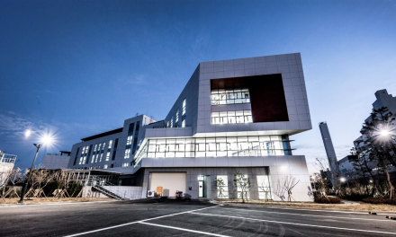

지속가능경영
Environmental
- 기후변화 리스크·
기회요인 -
동부건설은 ISO 14001, 45001 및 ESG 모범규준 등을 기반으로 기후변화 요인에 따른 영향을 정기적으로 분석하고 있습니다.
이를 통해 기후변화 위기에 대한 리스크는 최소화하고, 사업의 기회는 확대해 나가겠습니다.
| 구분 | 당사에 미치는 중대성 정도 |
기후변화 관련 재무적 영향 | ||
|---|---|---|---|---|
| 리스크 요인 | 기회 요인 | |||
| 자연적 요인 |
자연 재해 (홍수, 폭설 등) | High |
|
|
| 지구 온난화 | Medium |
|
|
|
| 사회적 요인 |
ESG경영 대두 | Medium |
|
|
| 정부 규제 강화 | High |
|
|
|
| 고객 Needs 변화 | Medium |
|
|
|
- 생물다양성
보호활동 -
동부건설은 환경을 아끼고 실천에 앞장서는 녹색경영을 실천하기 위하여 사업활동에서 발생하는 생물다양성에 대한 부정적 영향을 최소화하고자 노력하고 있습니다. 건설공사 수행 전 환경영향평가를 실시하고 있으며, 사업장 인근 멸종위기 및 천연기념물 등의 보호종을 식별하여 서식지 보존 또는 보호대책을 수립하여 이행하고 있습니다.
주요 현장 활동내용
| 현장명 | 법정보호종 | 활동내용 | ||
|---|---|---|---|---|
| 양서류/파충류 | 포유류 | 조류 | ||
| 인천검단지구3-1 | 맹꽁이(II급) | - | - |
|
| 월곶~판교1 | 맹꽁이(II급) | - | - |
|
| 새만금 신항 북측방파호안 | - | 수달(I급) | 검은머리물떼새(II급) |
|
| 새만금 신항 접안시설 | - | - | 검은머리물떼새(II급) 알락꼬리마도요(II급) |
|
| 호남고속철도 2-2 | - | 삵(II급) | 삵(II급) |
|
- 친환경 건설
-
동부건설은 환경영향을 최소화하기 위하여 설계단계에서부터 에너지효율을 높일 수 있는 방안을 수립하고, 공정별 환경영향 요인을 추출하여 시공 중에 발생할 수 있는 부정적인 영향을 줄이기 위한 노력을 기울이고 있습니다.
주요 현장 환경영향 저감을 위한 개선활동 사례
현장명 구분 개선활동 새만금 신항 북측방파호안
새만금 신항 접안시설해양 - 해역특성 고려, 친환경 설계 및 시공, 바다숲 조성 등 수산자원 보호
- 부유물질 확산방지 및 유류사고 방지대책 마련
호남고속철도 2-2 대기 - 가설방음판넬 연계 방진망 설치, 구간 스프링클러 설치
- 살수차량 운행, 방진덮개 설치
수질 - 이중 오탁방지막 및 오수처리시설 설치, 비점오염 저감시설 운영
월곶~판교1 대기 - 워터커튼 및 임시침사지 설치, IoT실시간 살수시스템 운영
동부건설은 건축물 시공 시 녹색건축물 인증제도를 통해 환경에 대한 영향을 최소화 하고자 노력하고 있습니다. 녹색건축물 인증제도는 설계와 시공, 유지, 관리 등 전 과정에 걸쳐 에너지 절약과 환경오염 저감에 기여한 건축물에 대해 인증을 부여하는 제도로서 최근 3개년 녹색건축 인증을 받은 건축물은 다음과 같습니다.
-
2020년 신서천화력종합사무실
시흥은계 LH 2단지 <신서천화력 종합사무소> -
2021년 주안역 센트레빌 / 마곡 센트레빌
반포 센트레빌 아스테리움 /
방배중앙 센트레빌 / 인천검단 LH 20단지 <반포 센트레빌 아스테리움>
<반포 센트레빌 아스테리움>
-
2022년 마곡 일진 융복합 R&D 센터
고덕서정리역 경기행복주택
 <마곡 일진 융복합 R&D 센터>
<마곡 일진 융복합 R&D 센터>